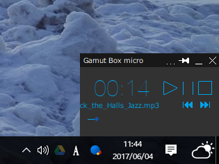
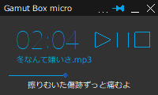
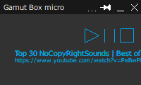
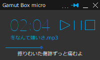
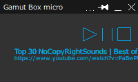

Gamut Boxは、MCI（Media Control Interface）という技術を利用した音楽プレイヤーアプリです。
通常のGamut Boxとミニサイズ版のGamut Box microの2種類があります。


最新版 : Ver.0.1（α版）



歌詞表示機能

リスト再生機能
インターネットからの再生
推奨動作環境
最新版 : Ver.0.1（α版）
ミニサイズだからこそできること。
Gamut Boxの縮小版が新登場。
画面が小さいので、作業の邪魔になりません。
mp3, wav, wma, asfとインターネットからの再生に対応しています。
※現在はアルファ版のみ公開しています。
最新版 : Ver.0.1（α版）


歌詞表示機能
曲の歌詞を表示させることができます。
また、Walkmanの歌詞ファイル（lrc形式）を共用することができます。
リスト再生機能
リスト再生をすることができます。
インターネットからの再生
インターネットショートカットを開くことで、
Youtubeやネットラジオなどを聴くことができます。
推奨動作環境
OS : Windows 7, Windows 8 / 8.1, Windows 10
最新版 : Ver.0.1（α版）